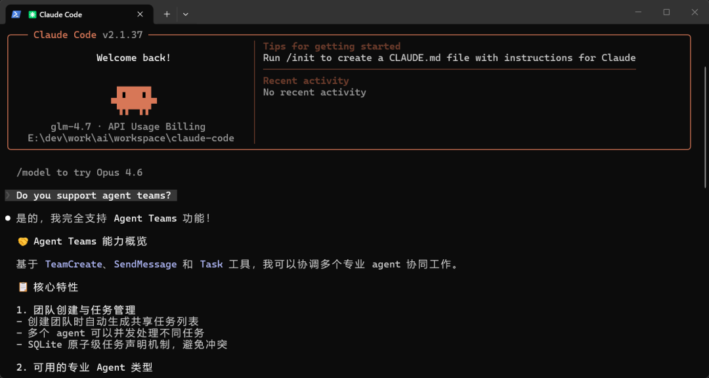
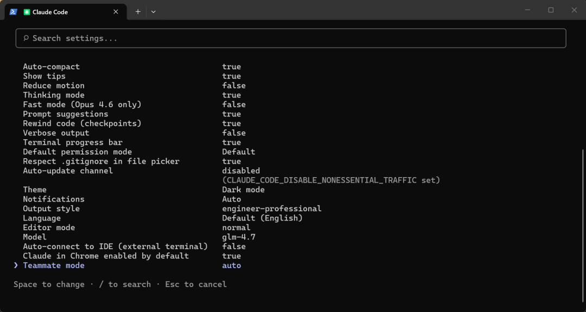
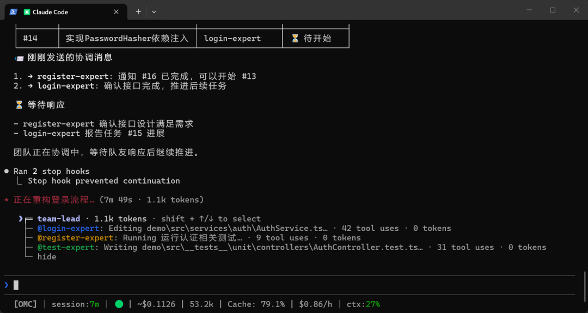
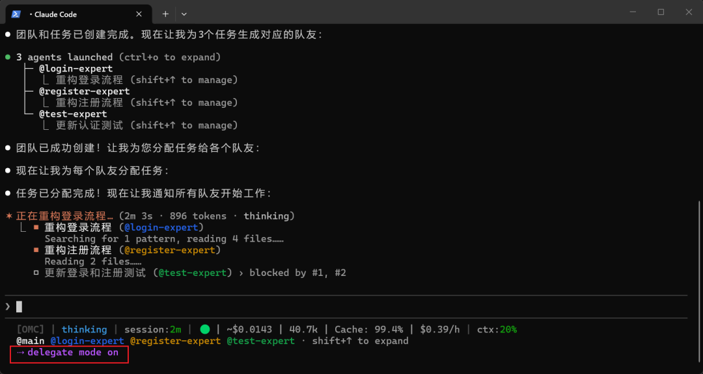
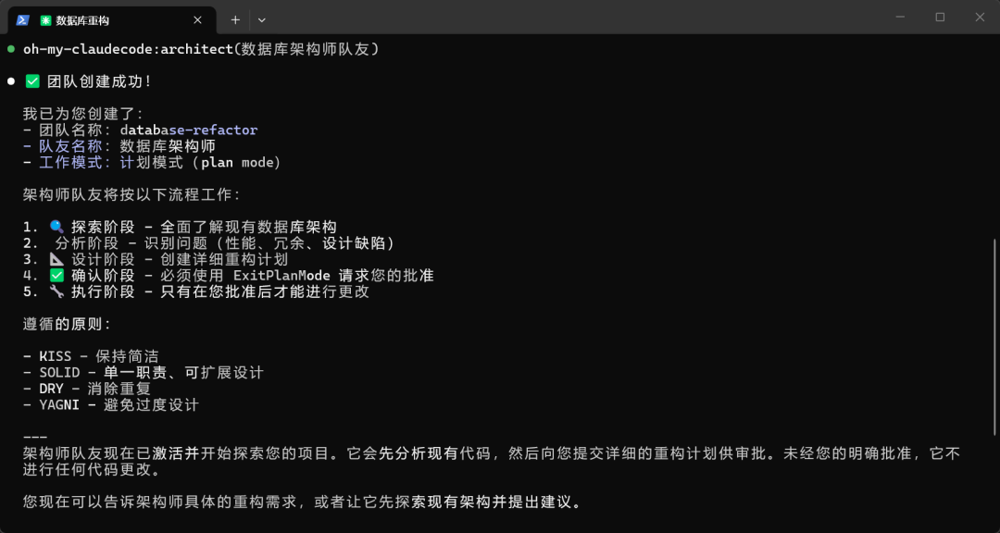
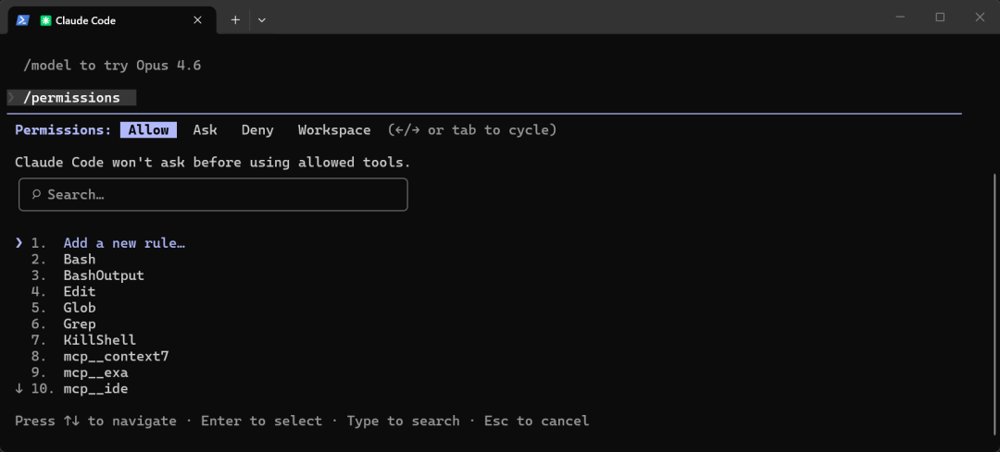

如果你用过 Claude Code 的智能体功能，应该很熟悉这种流程：一个智能体负责一个任务，按顺序执行，结果统一回到主会话。这种单智能体模式的局限很明显，只能串行推进，没法同时探索多个方案，更谈不上智能体之间的相互校验或讨论。
这正是 Claude Code Agent Teams 要解决的问题。它不只是把任务并行化，而是引入了一种新的协作方式：让多个 AI 实例在同一个项目中一起工作。它们可以互相通信、共享任务进度，甚至通过「对抗式讨论」来验证各自的判断。
接下来我会结合实际使用过程，讲清楚 Agent Teams（Swarms） 的基本概念、如何配置，以及在什么场景下最值得使用。
什么是 Claude Code Agent Teams

Agent Teams 是 Claude Code 中的一项实验性功能，用于协调多个 Claude 实例在同一个项目中协同工作。
它的核心思路是：每个队友智能体都运行在各自独立的上下文中，并且可以彼此通信。这意味着通信不再只发生在「主智能体 → 子智能体」之间，而是支持点对点的直接交流。
在一个 Agent Teams 会话中，会有一个智能体作为团队负责人（Team Lead），负责协调整体工作、分配任务和汇总结果。但每个队友依然是独立运行的，彼此之间可以直接交换信息、质疑对方的结论，并在他人工作的基础上继续推进。
核心组件
Team Lead（团队负责人）：团队的主会话。负责生成队友、分配任务、协调工作并汇总结果。负责人也可以执行任务，但通常可设置为仅负责协调。
Teammates（队友智能体）：各自独立执行分配任务的智能体。每个队友有自己的上下文窗口，加载项目相关信息（CLAUDE.md、MCP 服务器、技能），并可以直接与其他队友通信。
Task List（共享任务列表）：队友认领和完成的任务列表。每个任务有三种状态：pending（待处理）、in progress（进行中）、completed（已完成）。任务可设置依赖，未解决依赖的任务无法被认领。
Mailbox（消息系统）：智能体间的通信系统。可以发送给指定队友或广播给全员，消息即时到达，无需轮询。
团队任务管理
系统会自动处理任务之间的依赖关系。当某个队友完成了其他任务所依赖的任务后，这些被阻塞的任务会自动解锁，不需要人工干预。
负责人可以显式分配任务，也可以让队友在完成当前任务后，自行领取下一个未分配且依赖已完成的任务。为了避免多个队友同时领取同一个任务，任务领取过程使用了文件锁机制来防止竞争条件。
团队和任务信息都存储在本地：
• 团队配置： ~/.claude/teams/{team-name}/config.json• 任务列表： ~/.claude/tasks/{team-name}/
团队配置文件中包含一个 members 数组，记录了每个队友的名称、Agent ID 和 Agent 类型。队友可以通过读取这个文件来发现团队中的其他成员，从而完成协作。
上下文与通信
每个队友都有自己独立的上下文窗口。创建时，队友会加载与普通会话相同的项目上下文，包括 CLAUDE.md、MCP 服务和已启用的技能，同时还会收到负责人提供的启动提示。需要注意的是，负责人的对话历史不会传递给队友。
队友之间如何共享信息
• 自动消息投递：队友发送的消息会自动送达给目标对象，负责人不需要主动轮询或检查状态。 • 空闲通知：当队友完成任务并进入空闲状态时，会自动通知负责人。 • 共享任务列表：所有智能体都可以看到任务状态，并领取当前可执行的任务。
队友消息方式
• message：向指定的某一个队友发送消息 • broadcast：同时向所有队友发送消息。由于成本会随团队规模增长，建议谨慎使用
Agent Teams vs Subagents
Claude Code 的 Subagents 和 Agent Teams 都可以通过独立上下文实现并行工作。其中，Subagents 是专注于单个任务的工作单元，结果仅汇报给主智能体，所有协调工作也由主智能体统一管理。
Agent Teams 则是真正的协作机制：队友可以直接互相通信，共享任务列表并自我协调。Team Lead 负责整体安排，但不会成为通信瓶颈。需要注意的是，token 消耗会更高。
| 上下文 | ||
| 通信方式 | ||
| 协调方式 | ||
| 适用场景 | ||
| Token 成本 |
选型建议：
• 需要快速、明确产出结果时，用 Subagents • 任务复杂、需要讨论和协作时，用 Agent Teams
注意：该功能默认关闭，需要通过实验性标志启用。
快速设置指南
先从实际配置开始。有几个选项会直接影响 Agent Teams 的工作方式。
前置条件
在启用 Agent Teams 之前，请确认你已经具备以下条件：
• 已安装并更新到较新的 Claude Code 版本 • 可以访问 Claude Code 的配置文件（ ~/.claude/settings.json）• （可选）如果打算分屏查看多个智能体，建议使用 tmux 或 iTerm2
如有需要，可以先更新 Claude Code：
claude update
claude --version建议版本不低于 2.1.33，以避免兼容性问题。
步骤 1：启用实验性标志
Agent Teams 默认是关闭的，需要手动启用。
先打开 Claude Code 的配置文件：
# Mac/Linux
nano ~/.claude/settings.json
# 或使用你常用的编辑器
code ~/.claude/settings.json在配置中添加实验性标志：
{
"env": {
"CLAUDE_CODE_EXPERIMENTAL_AGENT_TEAMS": "1"
}
}如果你已经配置了其他选项，只需要把该字段合并进现有的 env 节点即可：
{
"env": {
"CLAUDE_CODE_EXPERIMENTAL_AGENT_TEAMS": "1",
"OTHER_SETTING": "value"
},
"hooks": {
// 现有 hooks 配置
}
}保存文件后，重启 Claude Code 使配置生效。
步骤 2：选择显示模式
Agent Teams 提供两种显示模式，侧重点不同。
In-Process（进程内模式）
所有队友运行在同一个终端里，你一次只能看到一个，但可以在它们之间切换。
• 适用于任何终端（VS Code、Windows Terminal、普通 shell） • 不需要额外工具或配置 • 使用 Shift + Up / Down在队友之间切换• 适合快速验证、简单协作或无法使用 tmux 的环境
Split-Pane（分屏模式）
每个队友都有独立的窗格，可以同时看到所有输出。
• 需要 tmux 或 iTerm2 • 更容易掌握整体进度和上下文 • 可以直接进入某个窗格与对应智能体交互 • 适合复杂任务、多智能体协作和调试场景
默认模式为 auto：如果检测到你在 tmux 中运行，会自动使用分屏模式；否则使用进程内模式。
如果想手动指定，在 settings.json 中配置：
{
"env": {
"CLAUDE_CODE_EXPERIMENTAL_AGENT_TEAMS": "1"
},
"teammateMode": "in-process"
}或使用分屏模式：
{
"teammateMode": "tmux"
}也可以在启动时为单次会话覆盖：
claude --teammate-mode in-process
claude --teammate-mode tmux步骤 3：安装 tmux（用于分屏）
想用分屏模式的话，需要先把 tmux 装好。
Mac:
brew install tmuxUbuntu / Debian / WSL：:
sudo apt update && sudo apt install tmux装完可以简单检查一下：
which tmux
tmux -ViTerm2 替代方案：
在 Mac 上，其实也可以不装 tmux，直接用 iTerm2：
1. 安装 it2命令行工具：brew install mkusaka/it2/it22. 打开 iTerm2 → Settings → General → Magic 3. 启用 Enable Python API
Claude Code 会自动检测你当前的终端环境，不需要手动指定。
步骤 4：检查是否生效
修改完设置文件后，重启 Claude Code，然后运行 /config 命令。
往下翻配置列表，如果看到：

说明 Agent Teams 已经成功启用。
如果没有这个选项，基本可以确定是配置文件的问题。重点检查：
• env是否写在正确的位置• CLAUDE_CODE_EXPERIMENTAL_AGENT_TEAMS是否设置为"1"
修正后保存文件，重启 Claude Code，再跑一次 /config。
步骤 5：创建你的第一个团队
进入 Claude Code 后，直接描述目标即可。最简单的方式是让它自行拆解任务：
创建一个智能体团队来重构认证模块。
将工作分解为可以独立完成的并行任务。如果你希望更可控，也可以手动指定队友和职责：
创建一个包含 3 个队友的团队：
- 一个重构登录流程
- 一个重构注册流程
- 一个为两者更新测试
每个队友使用 Sonnet 模型。Claude 会自动创建团队、生成队友、分配初始任务，并开始协同推进。

导航与交互
团队运行后，你可以用快捷键在不同队友之间切换和交流。
In-Process 模式：
Shift+UpShift+Down | |
Enter | |
Escape | |
Escape | |
Ctrl+T | |
Enter |
Split-Pane 模式：
/tasks | |
高级控制技巧
委托模式（Delegate Mode）
有时候你会发现 Team Lead 开始自己写代码，而不是把事情交给队友。通常不是「失控」，而是它觉得自己做更快。如果你希望它只负责调度，可以开启委托模式。

在这个模式下，Team Lead 只负责指挥：
• 拉起或关闭队友 • 给队友发消息、对齐方向 • 管理任务列表、跟进进度
它不会再改代码、跑命令或直接实现功能。
启用方式：
1. 先启动团队 2. 按 Shift+Tab切换到委托模式
当你希望 Team Lead 专注于调度，而不介入代码实现时，委托模式非常有用。
计划批准（Require Plan Approval）
对于复杂或高风险的任务，可以让队友在动手前先提交规划。
生成一个架构师队友来重构数据库架构。
在它们进行任何更改之前要求计划批准。在计划批准模式下，队友只能读取文件、调查信息，但无法修改代码。完成准备后，它们会将计划提交给 Team Lead 审查。

Team Lead 可以：
• 批准 — 队友退出规划模式，开始实施 • 拒绝并反馈 — 队友保持规划模式，根据反馈修改计划并重新提交
你可以通过指定标准来影响批准决策：
创建一个需要所有队友计划批准的团队。
只批准包含测试覆盖率的计划。
拒绝任何没有迁移就修改数据库架构的计划。指定智能体模型
默认情况下，队友会使用与 Team Lead 相同的模型。你也可以针对不同任务指定不同模型：
创建一个包含 4 个队友的团队：
- 一个使用 Haiku 的研究员，用于快速查找信息
- 一个使用 Opus 的架构师，用于复杂设计决策
- 两个使用 Sonnet 的实现者，用于实际代码更改这样可以让每个队友都专注自己擅长的任务，同时控制 token 消耗和性能。
预批准权限
队友执行某些操作时会向 Lead 请求权限。任务多的时候，这可能造成频繁的等待或干扰。
你可以在生成队友之前，提前批准常用操作：
/permissions给项目目录下的文件操作、常用命令以及队友需要用到的工具添加批准，这样队友就能直接执行，无需每次请求。

如果你完全信任团队，也可以跳过权限检查：
claude --dangerously-skip-permissions⚠️ 注意：跳过权限检查有风险，请确保队友行为可控。
关闭队友
当你需要让某个队友结束工作时，可以发送关闭请求：
请关闭队友 researcherLead 发出请求后，队友可以选择同意，安全退出，也可以拒绝并说明原因。
清理团队
当任务完成后，可以让 Lead 清理团队资源：
清理团队这会移除共享的团队资源。Lead 在执行清理前会检查是否还有活跃队友，如果有正在运行的队友，清理会失败，所以请先关闭所有队友。
⚠️ 注意：一定要通过 Lead 执行清理。队友自己运行清理可能无法正确处理团队上下文，容易留下不一致的资源状态。
用 Hooks 把好质量关
Hooks 可以作为最后一道质量门槛，在队友准备收工或提交任务时进行检查：
• TeammateIdle：队友准备进入空闲状态时触发。如果发现问题，返回 exit 2并给出反馈，队友会继续工作。• TaskCompleted：任务即将完成时触发。返回 exit 2可以阻止任务完成，并把需要修改的意见返回给队友。
实战应用场景
场景1：并行代码审查
单个审查员通常只能关注一种类型的问题。通过拆分领域，安全、性能、测试等都能得到同时关注，每个队友从不同视角分析同一套代码，更容易发现遗漏和潜在风险。
创建一个智能体团队来审查 PR #142，生成三个审查员：
- 安全专家：检查漏洞、注入风险、认证缺陷
- 性能分析师：查找瓶颈、N+1 查询、内存问题
- 测试验证者：检查边缘情况和测试覆盖率
让它们独立完成审查，然后将结果整合成按优先级排序的问题列表。每个审查者都基于同一个 PR，但各自关注不同的检查重点。审查完成后，由负责人汇总三方结论，形成统一的审查结果。
场景2：对抗式调试
当根本原因不明确时，让多个智能体同时测试不同理论，比顺序排查能更快找到问题。
用户报告结账端点间歇性 500 错误，大约 5% 的请求失败，没有明显规律。
创建 5 个队友智能体来调查不同可能原因：
1. 数据库连接池在高负载下耗尽
2. 库存预留中的竞态条件
3. 第三方支付 API 超时处理
4. 内存压力导致垃圾回收暂停
5. 服务间网络问题
让队友相互挑战、反驳彼此的理论。
最终能存活的假设最可能指向根本原因。在多智能体排查问题时，我发现对抗式调试非常有效。相比顺序逐一排查，让多个调查者相互质疑、挑战假设，往往能更快、更准确地定位根本原因。
场景3：跨层功能开发
在功能开发中，适合把一个完整功能拆成互不干扰的部分，让队友各自负责一块。
创建一个智能体团队来开发通知系统：
- 队友 1：后端 API（创建、列表、标记已读）
- 队友 2：数据库表结构和迁移
- 队友 3：前端 React 组件（通知铃铛、下拉菜单、列表）
- 队友 4：实时更新的 WebSocket 集成
- 队友 5：端到端集成测试
每个队友只修改自己负责的文件。
通过共享任务列表进行协调。
需要依赖他人结果时，明确标记任务依赖。每个智能体只负责自己那一部分文件，几乎不会产生合并冲突。通过这种拆分方式，整体推进速度通常比顺序开发快得多。任务列表用于管理依赖关系，例如测试相关的队友会在 API 和前端组件完成后再开始工作。
最佳实践与注意事项
何时使用 Agent Teams
✅ 适合使用的场景：
• 并行推进能明显提高效率 • 各个队友可以在相对独立的范围内工作 • 调研、代码审查、新功能拆分开发 • 需要队友之间直接讨论、对齐结论
❌ 不适合使用的场景：
• 任务本身是严格顺序的，无法并行 • 多个队友需要频繁修改同一个文件 • 工作之间强依赖，容易出现相互等待 • 体量很小的日常任务，协调成本高于收益
Token 成本考量
每个队友都是一个独立的 Claude 实例，拥有各自的上下文窗口。随着活跃队友数量增加，token 消耗会线性增长。
成本效益分析：
• 队友越多，花费越高 • 并行探索、审查和模块化开发，通常是值得的 • 普通任务用单个会话反而更省钱
当前功能限制
Agent Teams 目前仍处于实验阶段，存在以下已知限制：
• 不支持会话恢复： /resume和/rewind不会恢复 in-process 模式下的队友• 任务状态可能不同步：队友有时不会及时将任务标记为 completed• 关闭存在延迟：队友会先完成当前请求再退出 • 单会话单团队：一个 Team Lead 同一时间只能管理一个团队 • 不支持嵌套团队：队友无法创建或管理子团队 • 终端依赖：Split-pane 模式需要 tmux 或 iTerm2，默认使用 in-process 模式
最佳实践
从调研和审查类任务入手：选择边界清晰、不涉及直接改代码的任务，例如审查 PR、调研或排查问题。这类任务能直观体现并行探索的价值，同时不会增加并行写代码的复杂度。
尝试跨层功能开发：前端、后端、测试等模块分别由不同队友负责，职责明确、交付可控，有助于降低协作成本。
控制任务粒度：任务过小，协调成本过高；任务过大，队友长时间无反馈，返工风险增加。比较理想的任务是自包含的工作单元，有明确产出，如一个函数、一个测试文件或一份审查结论。
避免多人修改同一文件：给每个队友分配独立的文件或模块范围，可避免不必要的冲突。
持续关注团队动态：定期查看任务进度，及时调整策略，把有价值的发现汇总。长时间放任团队运行可能浪费 token 和精力。
总结与展望
Claude Code Agent Teams 是当前自然语言多智能体编排中较为优雅的一种实现。它与 Claude Code 生态深度结合，在不破坏既有能力的前提下，引入了声明式的团队协作机制。尽管仍处于早期阶段，但整体使用体验已经具备较高的实践价值。
这种方法的价值并不局限于软件开发。如果多智能体协作能够在工程实践中跑通，同样也适用于研究、分析、内容创作和项目规划等复杂工作。
如果你的项目涉及复杂的多模块开发、多角度调研，或需要并行推进和调试，不妨尝试一下 Agent Teams。
如果你觉得这篇文章有启发，随手点个赞、推荐、转发三连吧，你的支持是我持续分享干货的动力。